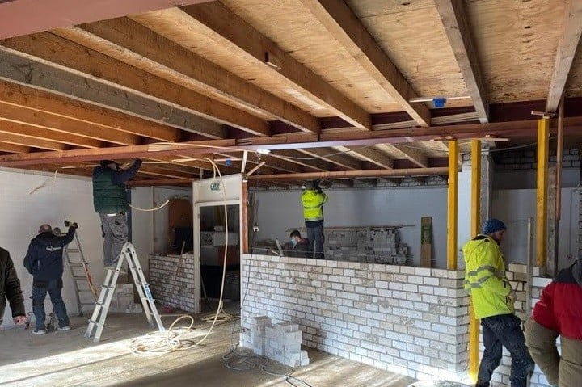
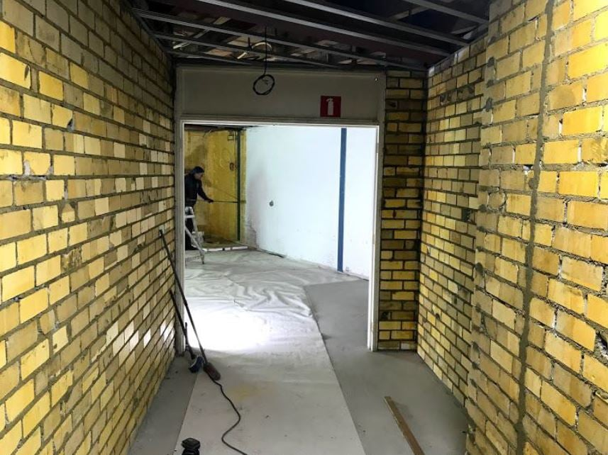
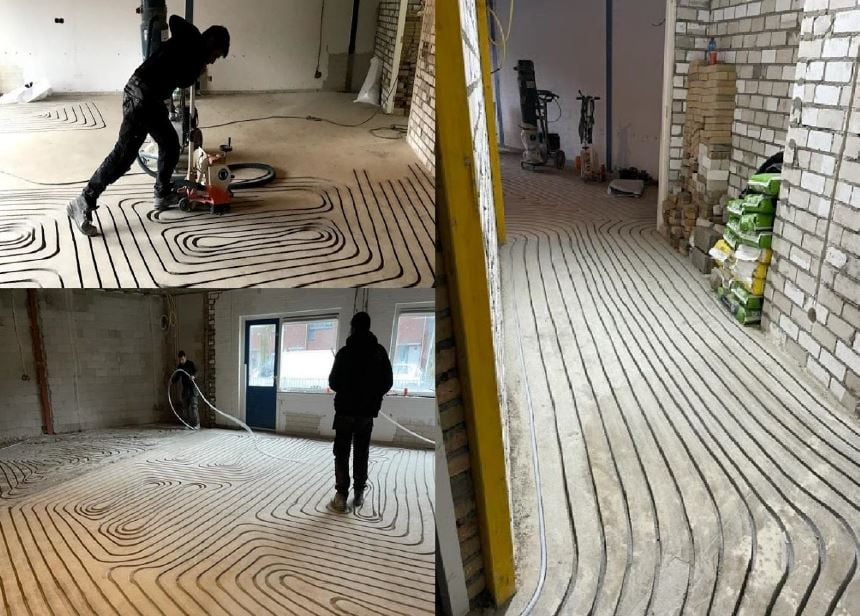

Alhamdulillah · 2021
Naša kuća
Ono što je bilo ruševina, postalo je naš dom — mesdžid, mekteb i mjesto okupljanja za bosansku zajednicu u Eindhovenu.




Ono što je bilo ruševina, postalo je naš dom — mesdžid, mekteb i mjesto okupljanja za bosansku zajednicu u Eindhovenu.



"Naš Gospodaru, primi ovo od nas." — kuća sagrađena rukama zajednice.